МІСТО ПРИП'ЯТЬ
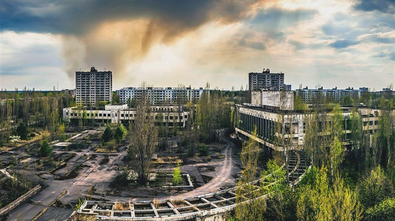
Застиглий час
Евакуйоване за 3 години. Символ порожнечі.
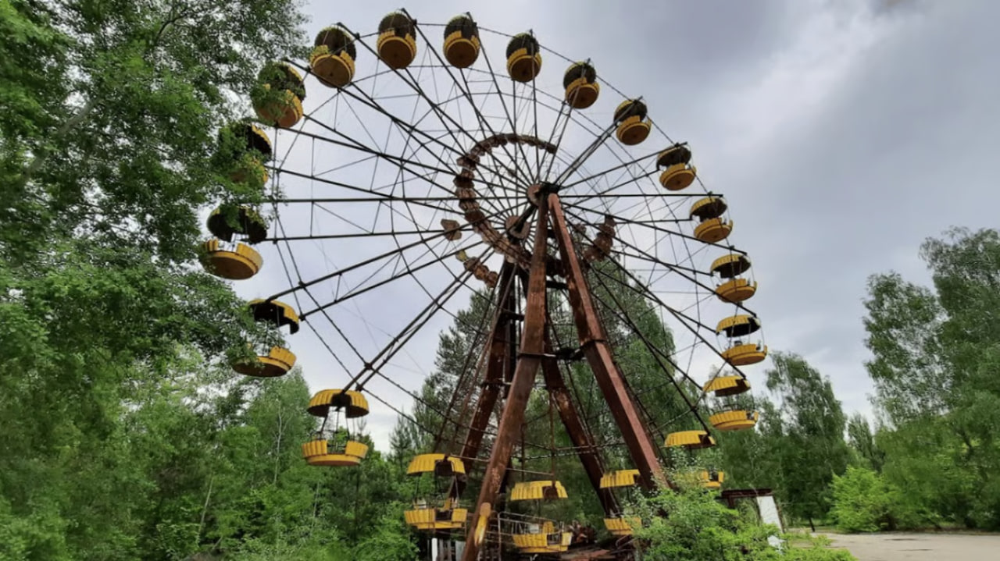
Символ трагедії
Колесо, що ніколи не запрацювало для дітей.
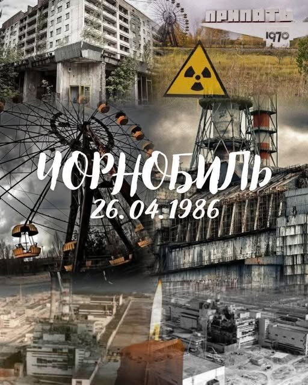
Історія в деталях
Від будівництва до евакуації.
Рудий ліс
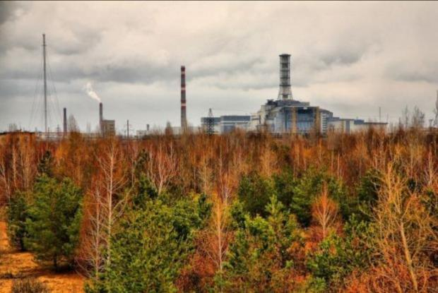
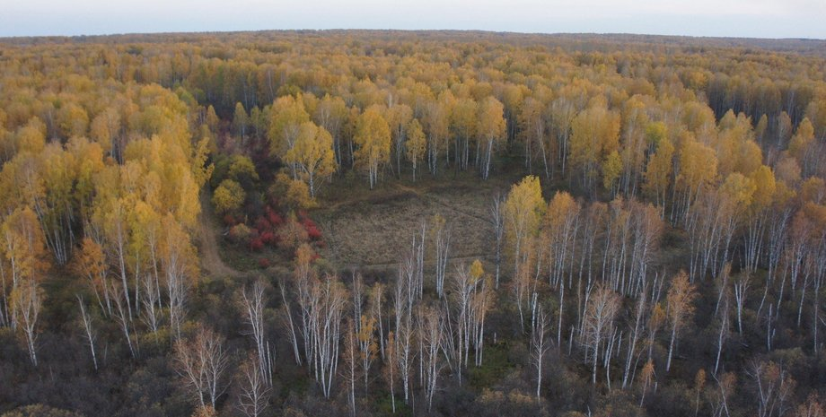
«Рудий ліс» (10 км²) взяв на себе найбільший удар радіоактивного пилу. Доза опромінення: 8 000 – 10 000 рад. Крони сосен спрацювали як фільтр, дерева загинули за лічені дні, змінивши колір на червоно-бурий.
*У 2022 році окупанти рили тут окопи, наразивши себе на значне опромінення.
Поширення радіації
Радіоактивна хмара охопила понад 200 тисяч км² європейських земель.
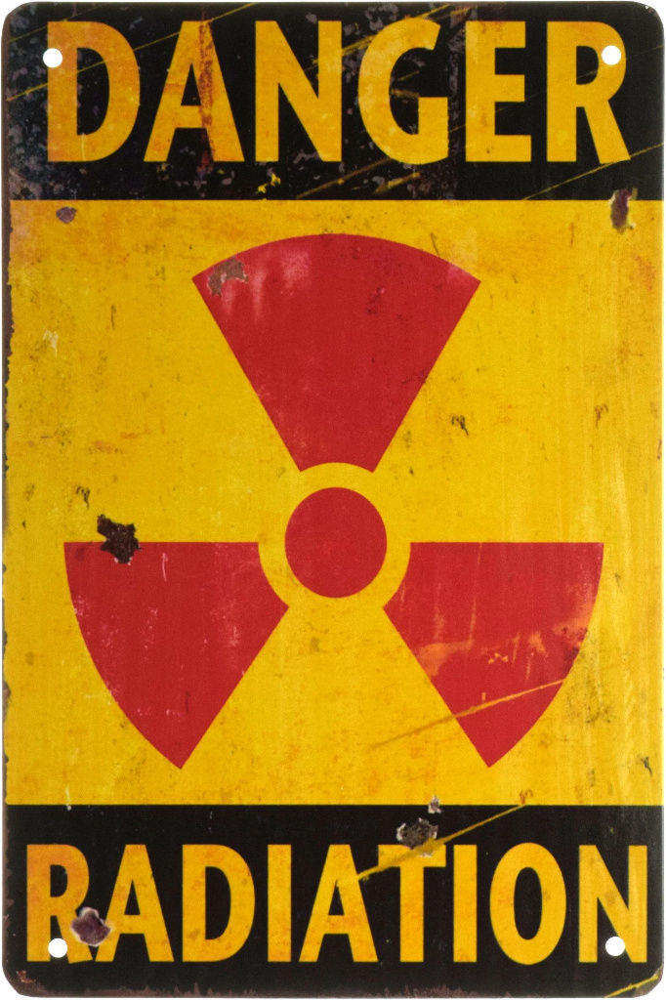
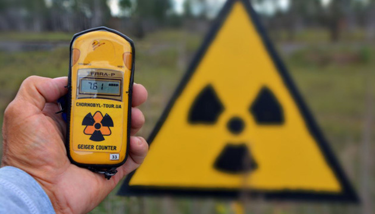
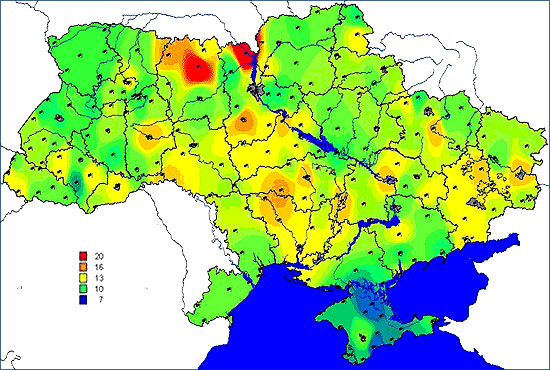
БЕЗПРЕЦЕДЕНТНА МУЖНІСТЬ
Герої-вогнеборці: Перший удар
40 пожежників боролися з вогнем на даху реактора без спецзахисту, щоб не дати вогню перекинутися на інші блоки.

Лейтенант Правик
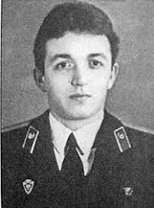
Лейтенант Кібенок
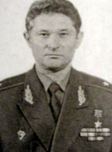
Майор Телятников
Василь Ігнатенко, Микола Ващук, Микола Титенок, Володимир Тішура померли від променевої хвороби у травні 1986.
Герої-водолази: Запобігання другому вибуху
Інженери станції спустилися в затоплені радіоактивною водою камери під реактором, щоб вручну відкрити клапани і спустити воду, запобігши тепловому вибуху, який міг знищити частину Європи.
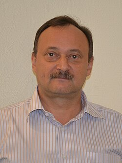
Олексій Ананенко
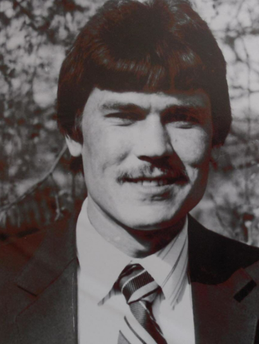
Валерій Беспалов
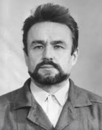
Борис Баранов
Сучасні реалії та Війна
До 2022 року Зона функціонувала як унікальний Чорнобильський радіаційно-екологічний біосферний заповідник. Природа відновлювалася: з'явилися ведмеді, рисі, зубри, коні Пржевальського.
Однак через повномасштабне вторгнення Зона стала прикордонним форпостом. Територія густо замінована. Гинуть дикі тварини, а науковці втратили доступ до досліджень.
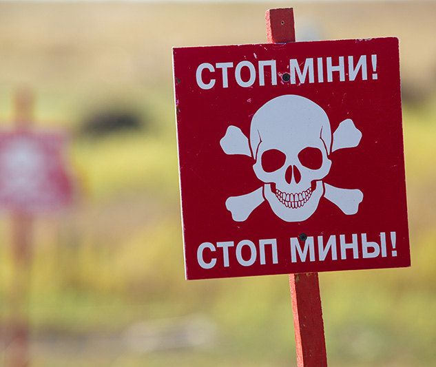
Чорнобиль у Культурі
«Постчорнобильська література»
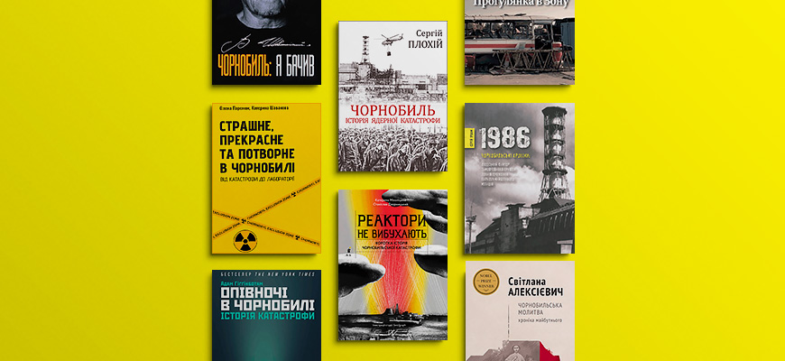
«Чорнобиль. Історія ядерної катастрофи» (Сергій Плохій): Фундаментальна праця Гарвардського професора, український погляд на трагедію та розвінчання радянських міфів.
«Марія з полином у кінці століття» (Володимир Яворівський): Художній роман про долю української родини та евакуацію.
Світовий кінематограф: Серіал «Чорнобиль»
Міні-серіал від HBO став світовим хітом, передавши атмосферу гнітючої брехні радянської номенклатури, яка жертвувала життями людей.
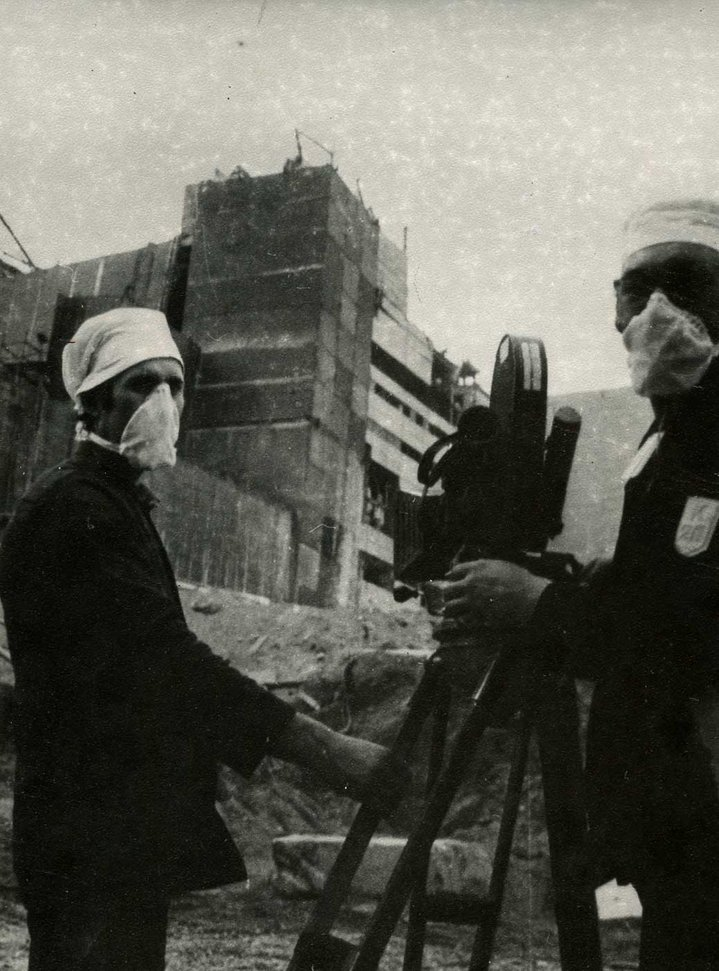
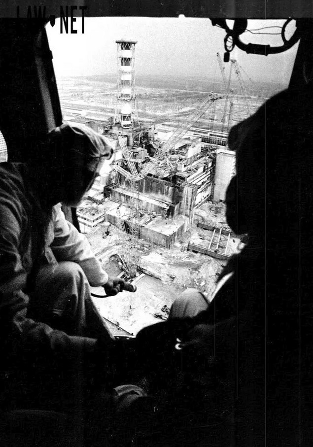
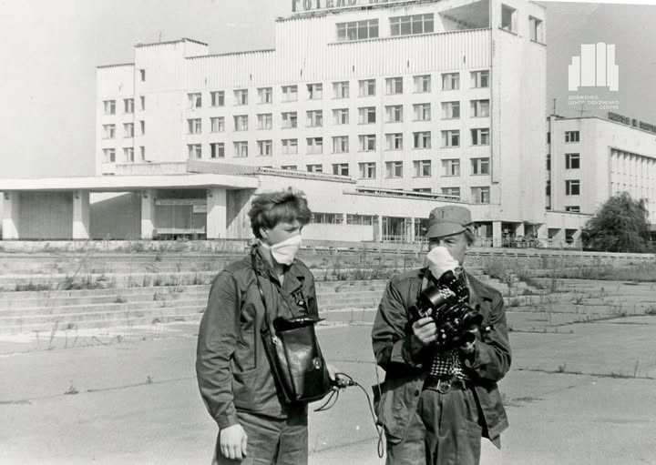
Один Чорнобиль?
Насправді на ЧАЕС було три великі аварії, дві з яких радянська влада приховувала.
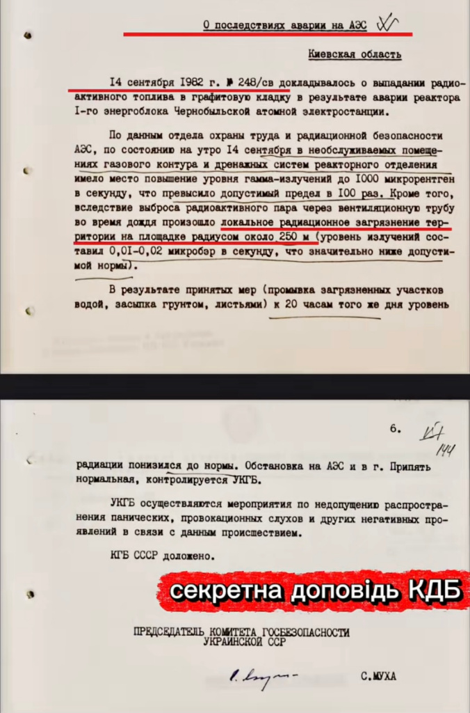
1982: Перша прихована аварія
Аварія на 1-му енергоблоці. Викид палива, локальне забруднення, радіація в приміщеннях вище норми в 100 разів.
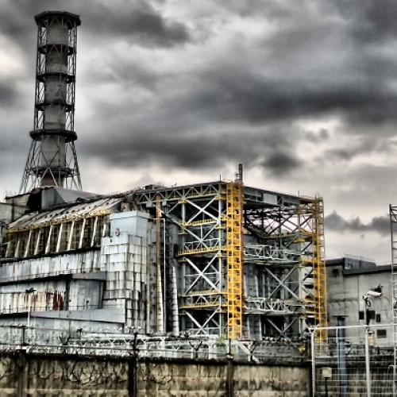
1986: Всесвітня катастрофа
Вибух 4-го енергоблоку, про який знає весь світ.
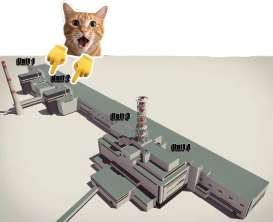
1991: За крок до другого вибуху
Пожежа на 2-му енергоблоці. Обвал машинної зали, викид радіації та пошкодження обладнання управління.
Чорнобиль: Епілог
Чорнобильська катастрофа - це подія глобального масштабу, яка назавжди змінила світ. В центрі цієї трагедії стоїть безпрецедентна мужність людей. Герої-вогнеборці та інженери-водолази ціною власного життя і здоров'я врятували континент від повного знищення.
Сьогодні Чорнобиль - це відкрита рана, унікальний екологічний феномен і водночас вічне застереження про те, що технологічний розвиток неможливий без відповідальності та правди.